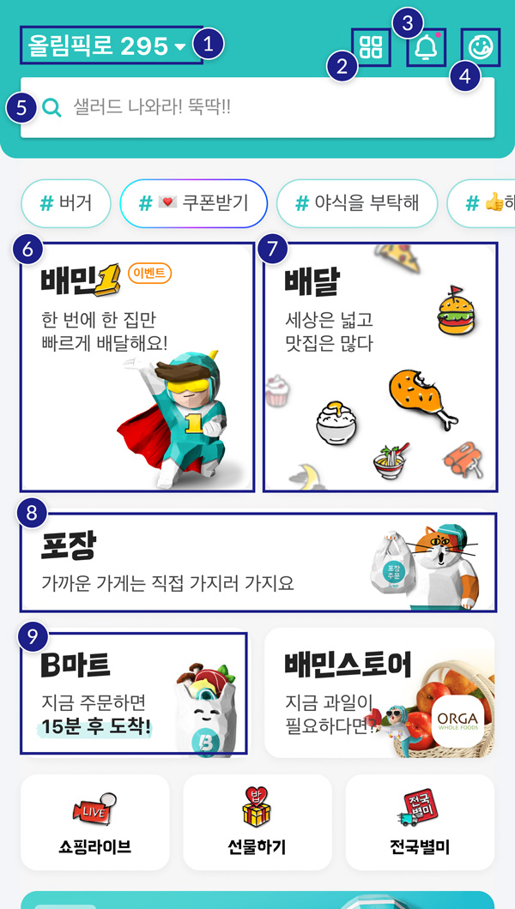

첫 화면 이해하기

- 1. 주소 정하기 배달 받을 곳을 주문할 때 정할 수 있다. 주소를 우리집, 회사 등의 이름으로 정하면 편하다.
- 2. 서비스 전체보기 배달의민족 앱에서 이용할 수 있는 모든 서비스를 볼 수 있다.
- 3. 알림센터 여러 가지 알림을 확인할 수 있다. 빨간점이 떴다면 새로운 알림이 도착했다는 뜻이다.
- 4. My배민 내가 찜한 가게, 내 주문내역 등 나와 관련된 정보를 볼 수 있다.
- 5. 검색하기 원하는 메뉴나 가게를 검색해 바로 찾을 수 있다.
- 6. 빠른 배달시키기 오른쪽의 배달보다 빠르게 받을 수 있다.
지역에 따라 배민1과 배달의 위치가 다르며 배민1이 안 보일 수 있다.
- 7. 배달시키기
- 8. 포장 주문하기 직접 가지러 가서 배달팁을 아낄 수 있다.
- 9. B마트(비마트) 마트에서 파는 물건도 음식처럼 주문하고 배달받을 수 있다.